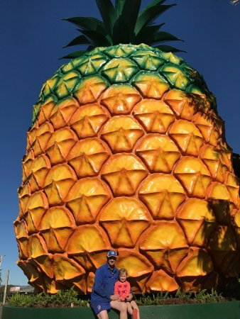

About Me
My name is Mickell Damaury Hanchard. I am 14 years YOUNG going on 15. My birth day is May 13th of 2004 and I am half Dominican and half Jamaican, so I can speak Spanish, English, and broken english witch is called Patois(pawtwah)from Jamaica. I also love anime and japanese culture and I am also learning Japanese as well, Konnichiwa!
Love playing in this website. Come play at Cool Math Games I am also apart of Google's CodeNext! learn more about Code Next
Fun facts
Some fun facts about me are that I play the saxophone,guitar,piano,and drums. I am also a "sneaker head" and I love to dress with the trends or with what looks good honestly. Living with a bunch of women makes me kind of a fashionisto, so I know how to dress and cook and take care of babies. There are a lot of babies in my family like A LOT so it kind of rubs off on me. Oh one more thing that I forgot to tell you, I have a flip phone! Don't even look at me like that; it's the best phone ever!
